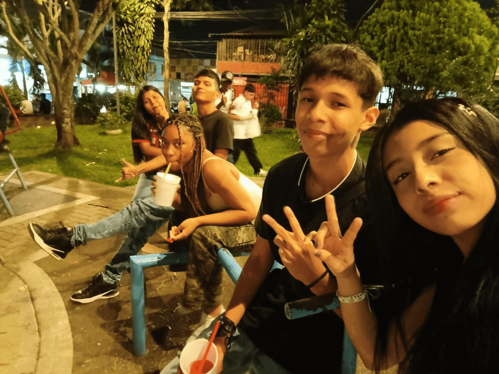
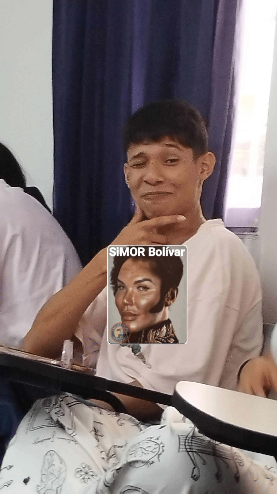
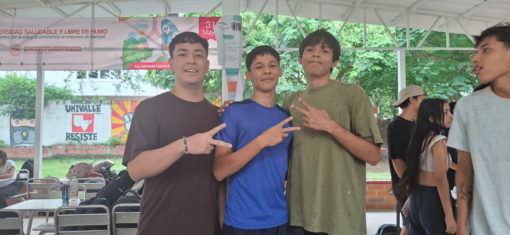
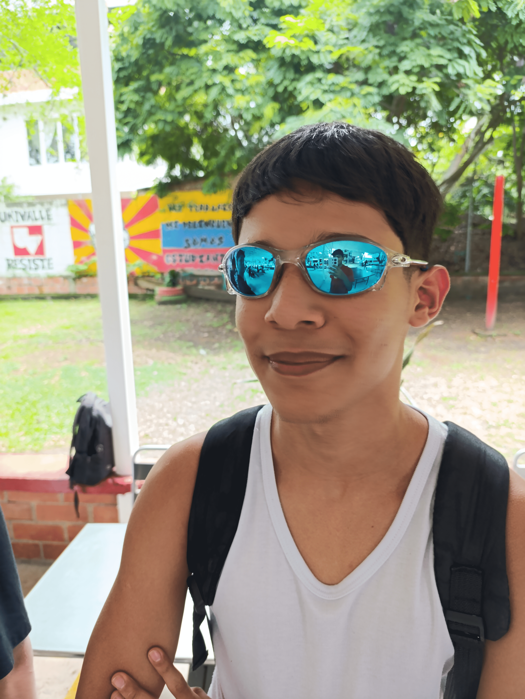

Hola, soy César Soto
Desarrollador de software y amante del rock.
¡Hola! Mi nombre es César Soto y soy estudiante de Tecnología en Desarrollo de Software en la Universidad del Valle. Esta página fue creada como parte de un proyecto académico, pero también como un espacio personal para compartir mi proceso como estudiante universitario.
Aquí vas a encontrar información sobre mi carrera, reflexiones de la materia Inserción a la Vida Universitaria (IVU), experiencias en clase, y una mirada más personal sobre cómo ha sido adaptarme a este nuevo mundo. También incluí algunos enlaces útiles y toques de diseño que fui aprendiendo en el camino usando Visual Studio Code.
Esta web representa una mezcla entre lo que aprendo, lo que pienso y lo que soy. Así que, siéntete libre de explorar y conocer un poco de este viaje llamado universidad.
Tecnología en Desarrollo de Software
La carrera de Tecnología en Desarrollo de Software forma profesionales capaces de analizar problemas y crear soluciones mediante la programación, el diseño de interfaces y el desarrollo de sistemas. A lo largo de la formación, se adquieren habilidades técnicas para diseñar, construir y mantener aplicaciones o plataformas en diversos entornos.
Durante el recorrido académico, los estudiantes se preparan para desempeñarse en áreas como el desarrollo de software, donde crean y mantienen sistemas de información; el diseño de interacción humano-computadora, enfocado en mejorar la experiencia del usuario a través de la usabilidad y la interfaz gráfica; y la gestión de infraestructura TIC, donde se encargan de administrar redes, servidores, bases de datos y garantizar la seguridad de los sistemas tecnológicos.
Esta carrera ofrece una alta proyección laboral, ya que actualmente muchas organizaciones dependen de soluciones digitales sólidas, seguras y eficientes para operar con éxito en cualquier sector.
Materia: Inserción a la Vida Universitaria
Recorrido por el Campus
La clase de “Recorrido por el campus” fue mucho más que una simple caminata por los pasillos de la universidad. Fue una experiencia que me ayudó a conectarme con mi nuevo entorno, conocer sus espacios, y sobre todo, comenzar a sentirme parte de algo más grande. Al principio, todo era nuevo y un poco abrumador, pero recorrer las instalaciones me dio una mejor idea de cómo funciona la universidad y me motivó a aprovechar cada rincón que ofrece, desde las aulas hasta las áreas comunes.
Lo más valioso fue darme cuenta de que no estoy solo en este camino; todos estamos aprendiendo a adaptarnos, a encontrar nuestro lugar y a construir nuestro propio recorrido dentro de la vida universitaria. Esta clase me ayudó a ver la universidad no solo como un lugar de estudio, sino como un espacio de crecimiento personal y profesional.
Gestión Emocional y Estrés
La clase de gestión emocional y del estrés me hizo detenerme un momento y pensar en algo que muchas veces pasamos por alto: cómo nos sentimos. En medio de tareas, responsabilidades y adaptarse a la universidad, es fácil olvidar que también necesitamos cuidar nuestra salud mental. Esta clase me ayudó a entender que no está mal sentirse agobiado o frustrado a veces, pero lo importante es aprender a reconocerlo y saber cómo manejarlo.
Aprendí que las emociones no son enemigas, sino señales que debemos escuchar. Además, descubrí técnicas sencillas pero útiles para manejar el estrés, como la respiración consciente, los descansos activos o simplemente hablar con alguien. Gracias a esta clase, ahora tengo más herramientas para enfrentar los desafíos con una mente más tranquila y enfocada, tanto en la universidad como en la vida en general.
Normatividad Universitaria
Esta clase me abrió los ojos sobre algo que normalmente no tomamos en cuenta hasta que es demasiado tarde: las reglas que rigen nuestra vida como estudiantes. El famoso Acuerdo 009, conocido como “la Biblia univalluna”, es básicamente el manual de supervivencia para todo estudiante de Univalle. Al principio puede parecer un documento largo y complicado, pero entendí que conocerlo me da claridad sobre mis derechos, deberes, y todo lo que debo tener presente para avanzar sin tropiezos en mi carrera.
Aprendí que no se trata solo de seguir reglas, sino de entender cómo funciona la universidad como institución, y cómo nosotros, los estudiantes, somos parte activa de ese sistema. Saber qué esperar y qué se espera de mí me hace sentir más seguro y responsable. Además, me di cuenta de que estar bien informado es una de las mejores formas de evitar problemas en el futuro.
Manejo del Tiempo
La clase de manejo del tiempo fue como una alarma que me hizo ver lo fácil que es perder el control cuando no organizamos bien nuestras actividades. Muchas veces creemos que el día no alcanza, pero en realidad el problema está en cómo usamos cada hora. En esta clase no solo hablamos sobre la importancia de planificar, sino que también identificamos herramientas y estrategias para hacerlo mejor.
Conocimos métodos como la matriz de Eisenhower o la técnica Pomodoro, y además descubrimos aplicaciones súper útiles como Google Calendar, Trello y Notion. Ver estas opciones me hizo entender que tener una buena gestión del tiempo no es solo cuestión de disciplina, sino de encontrar lo que funciona para uno mismo.
Gracias a esta clase, empecé a valorar más mi tiempo y a distribuirlo mejor entre estudio, descanso y vida personal. No se trata de hacer más, sino de hacer lo importante en el momento adecuado.
Técnicas de Estudio y Pensamiento Crítico
En esta clase entendí que estudiar no es solo leer o memorizar, sino saber cómo hacerlo de forma más estratégica y consciente. Aprendimos que hay diferentes técnicas que se pueden adaptar a nuestro estilo de aprendizaje, como los mapas mentales, resúmenes visuales, fichas de repaso y la técnica Feynman. Además, trabajamos en desarrollar el pensamiento crítico, algo que va más allá de solo aceptar información, se trata de analizarla, cuestionarla y entenderla desde diferentes puntos de vista.
Los videos y recursos que vimos nos ayudaron a entender mejor cómo funciona nuestra mente cuando estudiamos y cómo podemos entrenarla para aprender de manera más eficiente. También vimos cómo identificar información relevante, argumentar ideas y tomar decisiones informadas, lo cual no solo es útil para la universidad, sino para la vida en general.
Esta clase me hizo reflexionar sobre la importancia de no solo estudiar más, sino estudiar mejor, y de siempre mantener una mente abierta, curiosa y crítica ante cualquier contenido que leamos o escuchemos.
Comunicación y Resolución de Conflictos
Esta clase me ayudó a entender que comunicarse no es solo hablar, sino saber escuchar, expresarse con claridad y sobre todo, hacerlo con respeto. A veces damos por hecho que los demás entienden lo que decimos, pero la realidad es que muchos conflictos surgen por una mala comunicación o por no saber cómo manejar una situación difícil.
Aprendí que los conflictos no siempre son algo negativo, muchas veces son una oportunidad para crecer y fortalecer las relaciones, siempre que se manejen bien. Vimos diferentes estilos de comunicación, formas de expresar nuestras ideas sin atacar a los demás, y también cómo mantener la calma cuando las emociones están al límite.
Esta clase me enseñó herramientas muy útiles no solo para la universidad, sino para cualquier aspecto de la vida. Saber comunicarse bien y resolver conflictos de forma madura es clave para tener relaciones sanas, ya sea con compañeros, docentes, familia o en el futuro, con colegas de trabajo.
Galería de Imágenes



